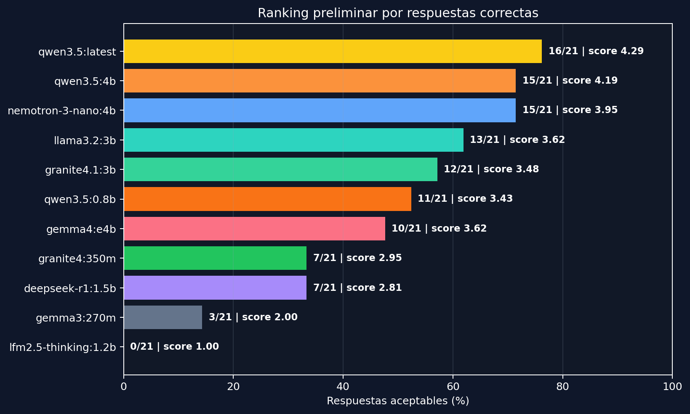
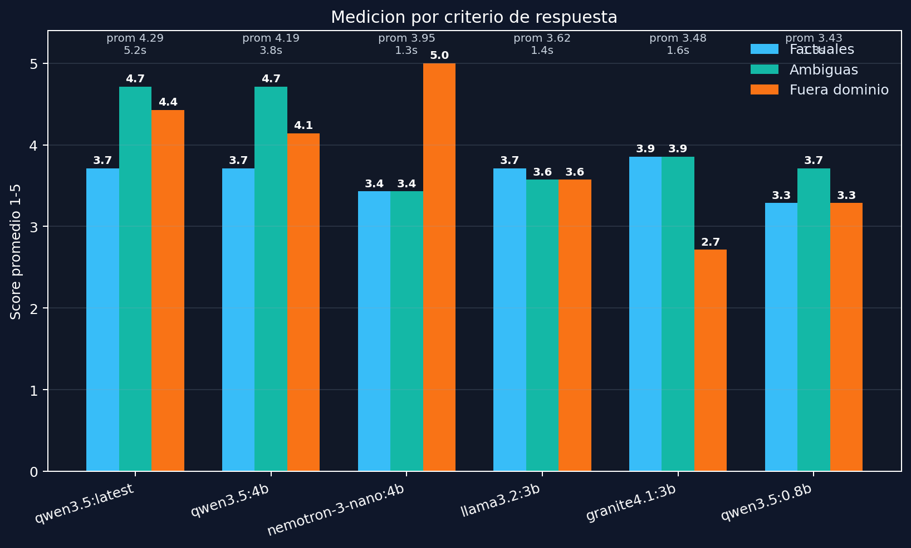
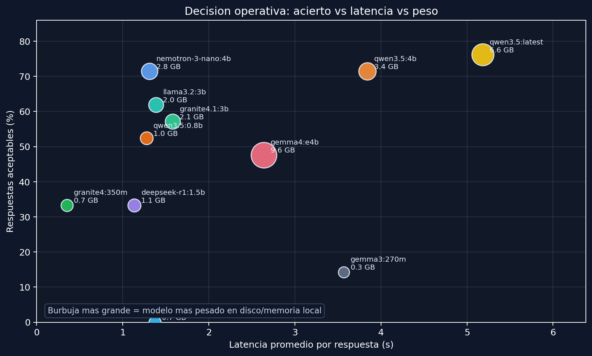

Datos jerarquicos
El dataset original estaba en JSON, util para administrar informacion, pero poco conveniente para recuperacion semantica directa.
MVP funcional, reproducible localmente y evaluado con evidencia. La evaluacion separa recuperacion, respuesta final, calidad del corpus y costo de hardware.
MVP funcional para responder consultas frecuentes sobre vehiculos, precios, carga, garantias, agencias y condiciones comerciales.
El desafio no era solo conectar un LLM: habia que transformar datos administrativos en evidencia recuperable y auditable.
El dataset original estaba en JSON, util para administrar informacion, pero poco conveniente para recuperacion semantica directa.
Una respuesta generativa libre podia combinar versiones, precios o condiciones comerciales de forma incorrecta.
La presentacion necesitaba evidencia medible, no solo una demo aparentemente correcta.
La mejora principal fue estructural: preprocesar la base, recuperar fragmentos mas precisos y usar una capa extractiva para datos factuales.
El sistema no indexa el JSON completo como un bloque: lo transforma en unidades semanticas mas chicas y consultables.
dataset/dataset_movilidad.json consolidado desde FAQs web, fichas tecnicas, informacion tecnica relevada, precios, agencias, carga y condiciones comerciales.
scripts/prepare_dataset.py normaliza claves, corrige codificacion y genera dataset/knowledge_base_movilidad.jsonl.
Menos ruido en el contexto, respuestas mas concretas y mejor trazabilidad de la evidencia usada.
La evaluacion inicial fue sintetica y automatica: un benchmark corto para demo/regresion y uno extendido para detectar fallas reales mediante keywords, fuentes y latencia.

A partir de los criterios trabajados durante la cursada, la evaluacion se amplio para distinguir si falla la busqueda de evidencia o la respuesta final.
De los documentos recuperados en el top K, cuantos eran relevantes. Ayuda a medir ruido en el contexto.
De todos los documentos relevantes esperados, cuantos aparecieron en el top K. Ayuda a detectar omisiones.
Mide en que posicion aparece el primer documento relevante. Es importante cuando la respuesta debe salir rapido.
Evalua si cada afirmacion de la respuesta esta respaldada por las fuentes recuperadas.
El sistema funciona en el alcance MVP, pero el benchmark extendido muestra donde conviene mejorar antes de afirmar robustez general.

El benchmark ahora guarda documentos recuperados y calcula Precision@5, Recall@5, MRR y Top-1 source accuracy.

Antes de lematizar o cambiar chunking, se midio la calidad del corpus RAG generado.

Al medir retrieval vectorial puro, los embeddings nuevos superaron al baseline nomic-embed-text.

Como el sistema ya reduce la carga del LLM con retrieval y respuesta extractiva, se preparo una matriz para probar si modelos livianos alcanzan para preguntas frecuentes.

La comparacion mostro que los modelos no debian recibir consultas que el sistema podia rechazar por reglas de alcance.

Las respuestas en vivo mostraron que no alcanza con la evaluacion sintetica por keywords y latencia: algunas respuestas fueron vacias, lentas o poco utiles. Se agrega una matriz humana balanceada: 7 factuales, 7 ambiguas y 7 fuera de dominio.
La seleccion preliminar se basa en la preevaluacion sintetica sobre 21 respuestas balanceadas. Cuenta como respuesta aceptable un score 4 o 5; la decision final queda sujeta a la revision manual.

El segundo grafico separa el rendimiento por tipo de pregunta. Esto evita elegir un modelo que sea bueno solo en preguntas simples y flojo en ambiguas o fuera de dominio.

El modelo recomendado no debe ser solo el de mayor score. Tambien importa cuanto tarda en responder y cuanto ocupa/carga en memoria para una demo local estable.

La presentacion puede cargar el chat real si se abre desde la API local. Esto permite probar preguntas sin salir del recorrido.
El proyecto queda defendible porque combina implementacion, reproducibilidad, medicion y una hoja de ruta alineada con los contenidos de clase.
Chat web, backend, base preprocesada, RAG local, prompts comparables y benchmark automatizado.
15/15 en benchmark MVP y benchmark extendido preparado para encontrar limites reales.
Medir retrieval, revisar faithfulness y separar fallos de recuperacion de fallos de generacion.